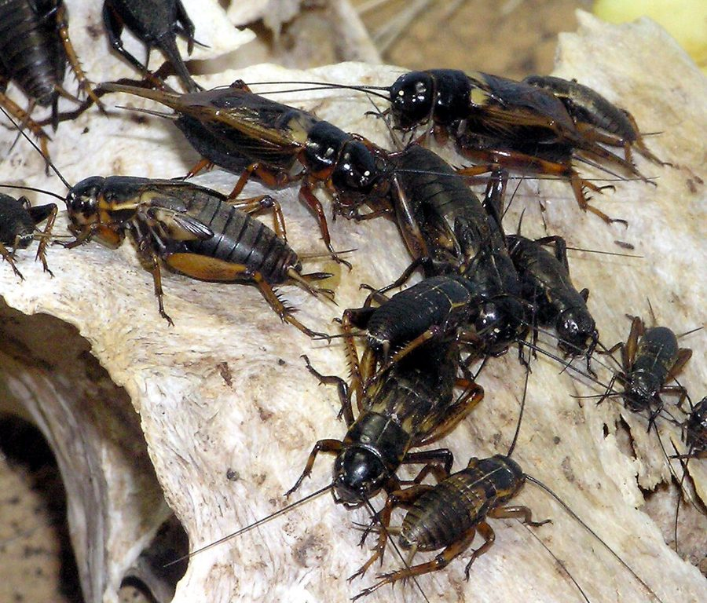

झींगुरTwo-Spotted Cricket
Gryllus bimaculatus · Gryllidae · INS-0012

- Scientific name
- Gryllus bimaculatus De Geer, 1773
- Family
- Gryllidae
- Hindi
- झींगुर
- Status here
- native
- IUCN
- not evaluated
When to look कब देखें
Present all year.
झींगुर / Two-Spotted Cricket
Gryllus bimaculatus De Geer, 1773 — Gryllidae
झींगुर — पूर्वी उत्तर प्रदेश के खेतों, बागों और घरों के आसपास पाया जाने वाला एक मध्यम आकार का चमकीला काला कीट। यह अपनी तेज़ रात की आवाज़ (चिरपिंग) के लिए प्रसिद्ध है, जिसे नर क्रिकेट अपने पंखों को आपस में रगड़कर उत्पन्न करते हैं। इसके पिछले पंखों के आधार पर दो स्पष्ट पीले-नारंगी धब्बे होते हैं, जिसके कारण इसे टू-स्पॉटेड क्रिकेट भी कहा जाता है। यह मिट्टी के नीचे बिलों में रहता है और सड़ने वाले कार्बनिक पदार्थों को खाकर मिट्टी की उर्वरता बढ़ाने में मदद करता है।
Quick Identification त्वरित पहचान
| Feature | Description |
|---|---|
| Form | Robust, cylindrical body with a large, rounded head and long, thread-like antennae |
| Coloration | Shiny black overall; distinct pair of pale yellow-orange spots at the base of the forewings |
| Wings | Fully developed forewings (tegmina) covering the abdomen; long membranous hindwings |
| Legs | Strong hind legs modified for jumping (saltatorial), equipped with spines |
| Ovipositor | Females possess a long, needle-like ovipositor extending from the rear of the abdomen |
| Behavior | Nocturnal; males produce a loud, repetitive "chirping" sound by stridulation at night |
Field tip: Look for a shiny black cricket with a broad head and two pale yellow spots at the very base of its forewings. At night, follow the loud, high-pitched chirping sounds to find them hiding in soil cracks, under stones, or near household lights.
Morphology आकारिकी
| Measurement | Range |
|---|---|
| Body length | 20–35 mm |
| Forewing length | 12–20 mm |
Body structure: The body is stout, heavily sclerotized, and glistening black. The head is large, globular, and wider than the pronotum, carrying a pair of compound eyes and very long, filiform antennae that exceed the body length.
Wings: The forewings (tegmina) are leathery and lie flat on the back. A pair of bright yellow or yellowish-white spots is prominent at the base of the tegmina where they attach to the thorax. The hindwings are membranous, longer than the forewings, and folded longitudinally beneath them like a tail when at rest.
Stridulatory organ: In males, the forewings are modified with a specialized file and scraper mechanism. Stridulation is achieved by raising the forewings and rubbing the scraper of one wing against the file of the other, creating the characteristic calling song.
Legs: The prothoracic and mesothoracic legs are adapted for walking, while the metathoracic (hind) legs are greatly enlarged and muscular, adapted for leaping. The hind tibiae bear several prominent spines on the dorsal margins.
Ecological Role पारिस्थितिक भूमिका
Detritivore and scavenger. Gryllus bimaculatus feeds primarily on decaying plant material, fallen leaves, dead insects, and organic debris. By breaking down organic matter, it plays a vital role in nutrient cycling and soil enrichment in agricultural fields.
Prey source. Crickets represent a critical trophic link in rural food webs. They are highly nutritious and serve as a primary food source for a wide variety of predators, including frogs, lizards, insectivorous birds (like mynas and shrikes), spiders, and small mammals.
Soil bioturbation. By digging shallow burrows and utilizing soil cracks, they assist in soil aeration, allowing water and nutrients to penetrate deeper into the root zones of crops.
Life Cycle / Phenology जीवन चक्र
- Metamorphosis: Hemimetabolous (incomplete metamorphosis), passing through egg, nymph, and adult stages.
- Egg laying: After mating, the female uses her long ovipositor to deposit eggs singly deep into moist soil, typically during the monsoon season.
- Nymphal stage: Eggs hatch in 10–15 days. Nymphs resemble miniature, wingless adults and undergo 8–10 molts over a period of 4–6 weeks depending on temperature and food availability.
- Adult emergence: Adults emerge with fully functional wings. The lifespan of an adult is typically 1 to 2 months. Stridulation peaks during the warm monsoon and post-monsoon nights (July to October).
Host Plants or Prey आहार
Dietary habits: Highly omnivorous.
- Decaying crop residues (mustard, wheat straw, rice husks).
- Fallen organic matter and decomposing weeds.
- Small soft-bodied insects, pupae, and insect eggs.
- Seedlings and tender shoots of weeds (occasional herbivory).
Predators / Natural Enemies शत्रु
- Amphibians — Indian Tree Frog (AMP-0004) and Indian Pond Frog.
- Reptiles — House Gecko (REP-0007) and Garden Lizard (Calotes versicolor).
- Birds — Common Myna (BRD-0006), Cattle Egret, and Black Drongo.
- Invertebrates — Huntsman spiders, centipedes, and predatory ground beetles.
Agricultural / Human Relevance कृषि प्रासंगिकता
Nutrient cycler. Their activity in agricultural fields helps speed up the decomposition of stubble and leaf litter, turning waste into plant-available nutrients.
Minor garden pest. Under exceptional circumstances of high population density, they may damage young crop seedlings or garden plants by chewing on the stems at ground level. However, they are rarely considered major pests in eastern UP.
Cultural and acoustic presence. In rural Basti, the continuous "झीं-झीं" sound of crickets is synonymous with monsoon nights and is a key indicator of rural ecosystem health.
Expected Locally स्थानीय रूप से अपेक्षित
Not a field record. Written from published accounts for eastern Uttar Pradesh. No confirmed local sighting yet — if you have seen it, that is what the atlas needs.
अभी तक स्थानीय पुष्टि नहीं। यह विवरण प्रकाशित स्रोतों से है, किसी अवलोकन से नहीं।
Extremely common across Basti district. During the monsoon, they are frequently seen under outdoor lights in villages and town streets, attracted by the illumination. Farmers often encounter them in large numbers during soil preparation and harvesting, hiding under piles of dry crop residues or in cracks of dry clay soil.
Distribution वितरण
Global range: Widespread across Southern Europe, Africa, the Middle East, Central Asia, the Indian subcontinent, and Southeast Asia.
In India: Found throughout the country, from the trans-Himalayan foothills to the southern peninsula.
In Uttar Pradesh: Distributed across all plains and agricultural districts.
In Basti district / eastern UP: Abundant resident across all rural and semi-urban landscapes.
Range notes: No significant range changes documented.
Research Questions शोध प्रश्न
Anyone can investigate these | कोई भी इन प्रश्नों की जाँच कर सकता है
- How does the frequency and duration of cricket chirps change with ambient temperature on summer versus monsoon nights in Basti? / बस्ती में गर्मियों और मानसून की रातों के बीच तापमान के साथ झींगुरों की आवाज़ की आवृत्ति और अवधि में क्या बदलाव आता है? — Record calls at different times and note the temperature.
- What micro-habitats (under stones, soil cracks, vegetation) do field crickets prefer for shelter during the daytime? / मैदानी झींगुर दिन के समय आश्रय के लिए किन सूक्ष्म आवासों (पत्थरों के नीचे, मिट्टी की दरारें, वनस्पति) को पसंद करते हैं? — Search and count individuals in different locations during the day.
- Do field crickets show a preference for organic crop residue over chemical-treated crop residue in a choice experiment? — Observe feeding preferences in a simple container.
- Which nocturnal predators are most commonly seen hunting crickets around outdoor village lights? — Monitor light poles at night and document hunting events.
- How long does it take for a cricket population to recolonize a freshly plowed agricultural field? — Survey a field before and after plowing.
Similar Species मिलती-जुलती प्रजातियाँ
| Species | How to tell apart | हिंदी |
|---|---|---|
| House Cricket (Acheta domesticus) | Smaller (16–22 mm); yellowish-brown color with dark bands on the head; lacks the two yellow spots at the wing base | घरेलू झींगुर — छोटा आकार, भूरा-पीला रंग |
| Asian Mole Cricket (Gryllotalpa orientalis) | Enlarged, shovel-like front legs modified for digging; velvety brown body; very different burrowing habit | माटी झींगुर — खोदने वाले पैर, भूरा रंग |
| Short-tailed Cricket (Anurogryllus spp.) | Paler brown; female has a very short, barely visible ovipositor; different song pattern | शार्ट-टेल्ड झींगुर — छोटी अंड-निक्षेपण नली |
Field rule: Shiny black body, body length 20–35 mm, with a pair of distinct yellow-orange spots at the base of the forewings, identifies Gryllus bimaculatus.
Taxonomy & Classification वर्गीकरण
Original description. Charles De Geer described the species as Gryllus bimaculatus in 1773 in his work Mémoires pour servir à l'histoire des Insectes (Vol. 3, p. 521). The type locality is Sweden (described from specimens imported from Africa). The specific epithet bimaculatus is derived from the Latin bi- (two) and maculatus (spotted), directly referring to the twin yellow spots on the wing bases.
Subspecies. Monotypic — no subspecies are currently recognised.
Family and order placement. Placed in the order Orthoptera (crickets, grasshoppers, and locusts), suborder Ensifera (long-horned orthopterans), family Gryllidae (true crickets), subfamily Gryllinae.
Phylogenetic notes. Gryllus bimaculatus is a model organism in developmental biology and neurobiology due to its ease of laboratory culture and regeneration capabilities. It represents a basal lineage within the genus Gryllus.
IUCN status rationale. Not assessed by the IUCN Red List (Not Evaluated). It is an extremely common, widespread, and ecologically resilient species with no conservation threats.
Photo Gallery फोटो गैलरी
References संदर्भ
- De Geer, C. (1773). Mémoires pour servir à l'histoire des Insectes. Tome Troisième. Pierre Hesselberg, Stockholm, p. 521.
- Chopard, L. (1969). The Fauna of India and the Adjacent Countries. Orthoptera. Vol. 2. Grylloidea. Zoological Survey of India, Calcutta.
- Vasanth, M. (1993). Studies on crickets (Grylloidea: Orthoptera) of Northeast India. Records of the Zoological Survey of India, Miscellaneous Publication, Occasional Paper No. 132.
- Alexander, R.D. (1962). Evolutionary change in cricket acoustic communication. Evolution, 16(4), 443–467.
- GBIF Occurrence Data — Gryllus bimaculatus, India (2010–2025).
- Zoological Survey of India (ZSI) — Orthopteran Fauna of Uttar Pradesh.
Source file: species/fauna/insects/field_cricket.md